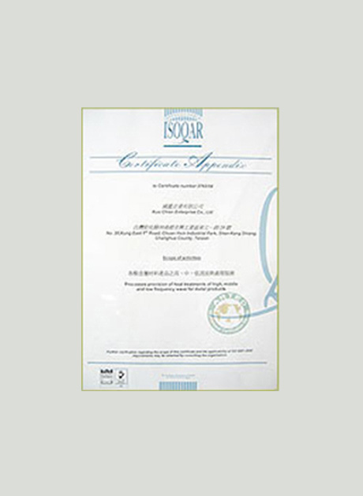
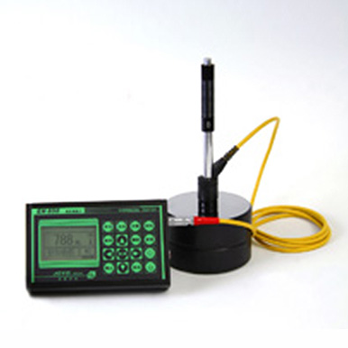
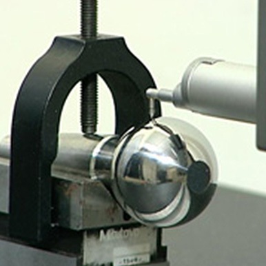
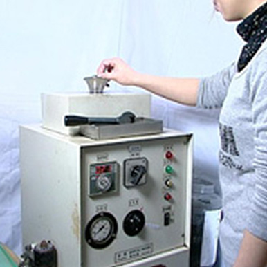
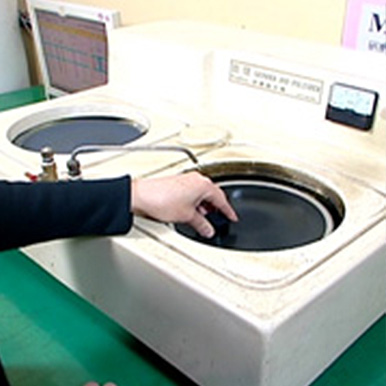
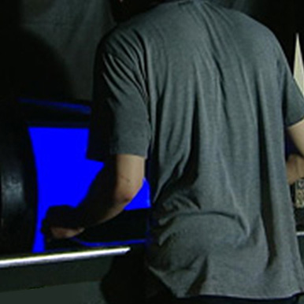

Services
公司沿革：
2015年 12'
- 進行ISO品質系統改版，通過ISO 9001:2015的認證。
2010年 05'
- 從日本DKK引進多套先進中、低週波感應淬火設備。
2010年 03'
- 進行ISO品質系統改版，通過ISO 9001:2008的認證。
2008年 08'
- 二廠(國喆)遷廠至伸港鄉，廠房為六百五十坪。
2007年
- 於和美增設二廠(國喆股份有限公司) 。
2004年
- 引進兩套超深冷設備，提供客戶多元服務。
2003年 09'
- 導入2000年新版ISO品質管理系統。
1999年
- 再度遷廠至現址，廠房為四百七十坪。
1995年
- 導入新技術，增購2套日製中週波、低週波之機器設備，更提昇品質及生產效率。
1994年 03'
- 資本額增資為新台幣伍佰萬元。
1984年
- 工廠遷移至彰化縣和美鎮彰和路2段550號，廠房為一百二十坪。
1980年 07'
- 7月創立，高週波專業化熱處理加工。資本額新台幣壹佰萬元。
主要營業項目：
- 高週波、中週波、低週波專業化熱處理。
- 有關金屬之表面、平面、內孔等熱處理。
- 汽車、機車、工作母機、紡織機械、產業機械...等零件熱處理。
- 各種齒輪、大小滾輪、軸心、刀類、滾珠、螺桿、滑軌...等熱處理。
- 鋼、鐵、銅、鋁退火處理。
- 金屬調質、正常化，回火處理。
- 零件表面噴砂處理。
- 超深冷處理。
- 金屬表面磁性探傷檢驗。
- 金屬材料分選。
經營理念方針
經營理念：
『和睦相處，誠實公正，勇於負責，貫徹到底』來實踐『永續經營』
『創新，品質，交期，服務，生產力』來提昇產品競爭力
經營管理原則：
計劃要『週延』
Plans should be comprehensive
實施全面品質保證系統，並計畫周延執行，生產高品質的產品。
執行要『認真』
Execution should be thorough
讓每個客戶都成功，是我們的使命；對於客戶的產品我們用心盡力執行。
檢討要『虛心』
Modal review
技術日新月異，不間斷地自我檢討與研究開發，才能確保競爭優勢。
改善要『具體』
Specific improvement
提出具體改善方針，更有效率的執行修正，確保優質品質的產出。
工作五大原則：
- 時效性(快)：掌握時效，爭取契機
- 徹底性(狠)：追根究底，止於至善
- 正確性(準)：守法守份，腳踏實地
- 完整性(戰術)：垂直整合，上下一心
- 連貫性(戰略)：雙向整合，精誠團結
基本工作目標：
- 經營管理：經營合理化
- 管理制度化；制度標準化
- 做人(有容乃大)：建立同仁『真誠』情感，互相體諒，互相尊重，互相成長。
- 處事(無欲則剛)：貫徹理念、原則，落實以『良心』為標準之服務品質。
產品功能
高週波金屬熱處理的優點：
- 可選擇性局部加工硬化。同時具備高硬度及原金屬柔軟韌性。
- 產品的品質硬度均勻。
- 增加疲勞強度。
- 表面硬化處理，產生之變形極小，亦可實施矯直。
- 因加熱迅速，故氧化膜減低至最少，保持精密程度，提高產品品質，促進企業競爭能力。
鋼材高週波熱處理硬度表-1
| 材質 | 材質 | 碳(C)% | 硬度(HRC) | ||
| SKH2 | 綠白 | (高速鋼) | 0.70~0.85 | 62 | |
| SKH3 | 綠黃 | (高速鋼) | 0.70~0.85 | 63 | |
| SKH4A | 綠紅 | (高速鋼) | 0.70~0.85 | 64 | |
| SKH9 | 綠藍 | (高速鋼) | 0.80~0.90 | 63 | |
| SKD-1 | 白 | (耐磨合金鋼) | 2.00~2.20 | 61 | |
| SKD4 | 紅白 | (高級熱模合金鋼) | 0.25~0.35 | 50以下 | |
| SKD5 | 紅黃 | (特種熱模合金鋼) | 0.25~0.35 | 50以下 | |
| SKD11 | 紫 | (冷模鋼) | 1.40~1.60 | 61 | |
| SKD61 | 紅藍 | (熱模鋼) | 0.35~0.42 | 53以下 | |
| SUJ2 | (軸承鋼) | 0.95~1.10 | 60 | ||
| SUP3-4 | (彈簧鋼) | 0.95~1.10 | 60 | ||
| SKS2 | 綠 | (烏合金鋼) | 1.00~1.10 | 60 | |
| SKS3 | 藍黃 | (耐模合金鋼) | 0.90~1.00 | 60 | |
| SK2-3 | 紅 | (炭素工具鋼) | 1.10~1.30 | 63 | |
| SK5 | 藍 | (炭素工具鋼) | 0.80~0.90 | 60 | |
| S45C | 黃 | (中炭鋼) | 0.42~0.48 | 55-60 | |
零件表面噴砂鋼材熱處理硬度表-2
| 材質 | 材質 | 碳(C)% | 硬度(HRC) | ||
| SCM3-4 | 紅 | (絡鉬合金鋼) | 0.33~0.43 | 58 | |
| SNCM-8 | 藍 | (鎳絡組合金鋼) | 0.36~0.43 | 58 | |
| SNC-1 | 黃 | (鎳絡合金鋼) | 0.38~0.43 | 50-55 | |
| SNC-4 | 紅綠 | (絡合金鋼) | 0.38~0.43 | 50-55 | |
| SCM21 | 綠 | (絡組合金鋼) | 0.13~0.18 | 60 | |
| SNCM21 | 白 | (鎳絡組合金鋼) | 0.18~0.23 | 60 | |
| S20C SS41 | 鐵 | 滲碳後高週波淬火 | 60 | ||
熱處理鑄鐵熱處理硬度表
| 材質 | 材質 | 碳(C)% | 硬度(HRC) | |
| 波來可段鑄鐵 | FMC | 0.35~0.85 | 42~62 | |
| 球墨鑄鐵 | FCD-45 | 0.50~0.75 | 48~52 | |
| 灰鑄鐵 | GC FC-30 | 0.45~0.85 | 40~55 | |
| 可段鑄鐵 | 0.35~0.90 | 32~63 | ||
| 低合金鑄鐵 | 0.25~0.85 | 45~63 | ||
- 可段鑄鐵的組織應是肥拉鐵、波來鐵+退火石墨。
- 球墨鑄鐵的組織應是波來鐵+球狀石墨，允許有15-20%的肥拉鐵。
- 灰鑄鐵的組織是細波來鐵+短小的片狀石墨，允許有15-20%的肥拉鐵。
- 合金鑄鐵的組織應是波來+細小均部的石墨和針狀或網狀化合物。
服務品質
國鑑對品質的嚴格把關：
公司基於重視品質，同時也重視客戶需求及期望，由總經理核准品質政策為：
『技術精湛要創新，交期準確最用心，客戶滿意有信心，持續改善靠恆心』
並徹底執行貫徹其涵義。為此也特別定製一套管理責任程序，確保公司品質管理系統達到品質政策，並界定有關品質工作人員權責，實施於各項品質管理活動中。在有關品質管理系統之制、修、廢規定，品質政策、目標、組織、管理代表之規定及審查等。而公司各單位主管應隨時或利用開會機會，加強宣導品質政策，務使本公司各階層皆瞭解、實施。
取得ISO9001國際品質認證：
更為確立公司的品質保證也於2003年9月導入2000年新版 ISO品質管理系統。
2010年2月進行ISO品質系統改版，通過ISO 9001:2008的認證。



檢驗儀器設備：
- 洛氏硬度計
- MVK-HO+PC自動微小硬度計
- 里式手提式硬度計
- 金相檢驗前準備機械
- 磁性探傷機
- 材料選別機
- 粗糙度檢驗儀

洛氏硬度計
洛氏硬度計

MVK-HO+PC自動微小硬度計
Marketing Manager

手提式里氏硬度計
HR Manager

材料選別機
HR Manager

粗糙度檢驗儀
HR Manager

輪盤式切割機
金相檢驗前準備機械

鑲埋機
金相檢驗前準備機械

研磨拋光機
金相檢驗前準備機械

磁性探傷機
檢驗機械
出貨送貨一慣化流程：
能夠迅速的將您的部品做最精密的加工完成，也能夠在做完後立刻派遣專人送貨，以節省保貴的時間資源，在指定的時間內做最有效率的事情。